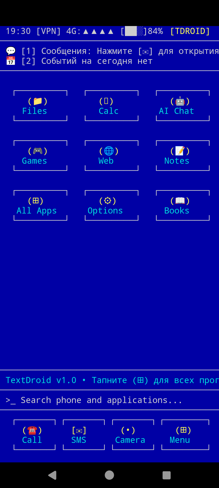
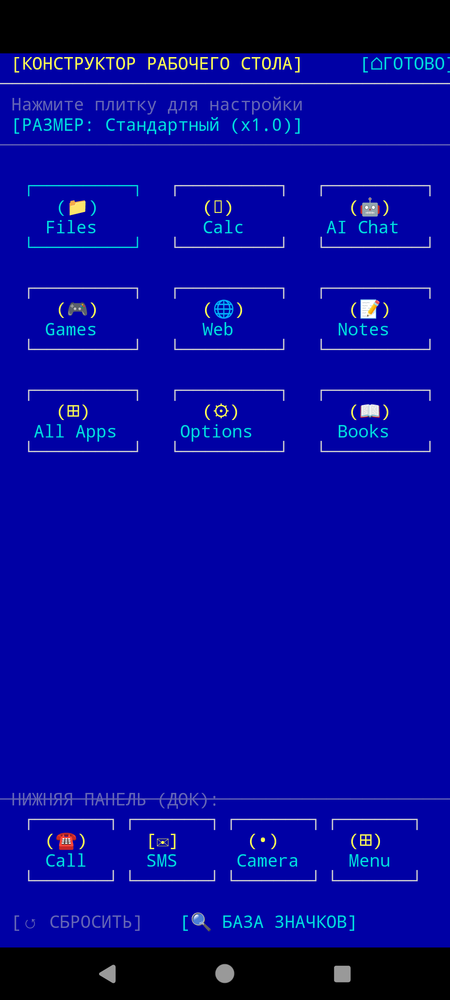
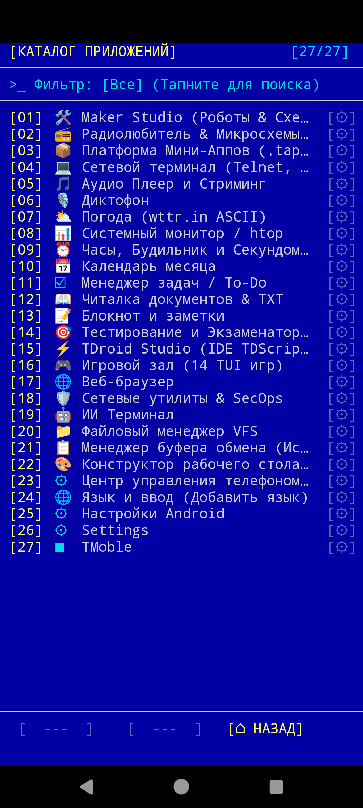
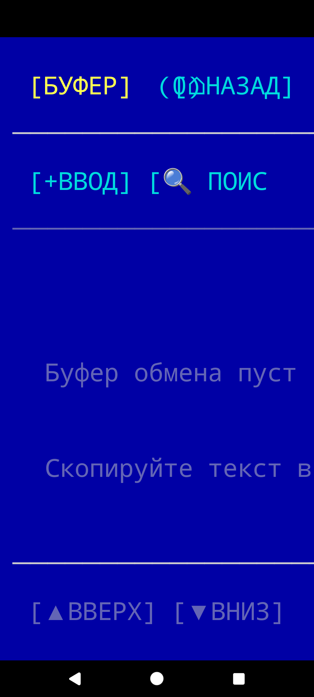

Инженерная разработка энергоэффективных систем, TUI OS для Android, языка программирования TDScript и кроссплатформенных игр.
Приветствую! Меня зовут Антон Михайлов. Моя инженерная философия — создание программных решений с экстремальной оптимизацией ресурсов: нулевой графический оверхед (0 KB VRAM), максимальная автономность мобильных устройств, чистая архитектура и полный контроль над аппаратурой.
Android Architecture (Kotlin/Java), разработка встроенных языков и виртуальных машин (AST/байткод), TUI интерфейсы, сетевые протоколы (UDP, TCP, LoRa, Modbus), алгоритмы ИИ.
100% On-Device обработка данных. Никакой телеметрии, никаких скрытых трекеров и рекламных SDK. Ваши данные принадлежат только вам.
Tdroid Pro — это ретро-консольная операционная среда для Android в стиле Turbo Vision / DOS / VT100. Приложение весит всего 3.1 МБ и потребляет рекордные 9-15 МБ RAM.
Чистый список приложений без лишних громоздких приставок. Возможность назначить любые псевдографические и Unicode-значки (60+ символов), настроить сетку 3x3, док и масштаб значков.
Двухпанельный VFS Commander, перехватчик буфера обмена с историей, сетевые утилиты SecOps, ИИ-терминал и калибровка экранов часов.

Главный экран (Turbo Vision)
Конструктор рабочего стола & Меню
Чистый каталог приложений [⚙]
Менеджер буфера обмена с историейTDScript — встроенный автономный язык программирования и среда исполнения в Tdroid.
Программы упаковываются в один файл .tapp весом всего 2-10 КБ. Поддерживается установка из внешних источников в 1 клик.
Однокликовая компиляция в бинарный поток опкодов .tbc. Исходный код удаляется, защищая алгоритмы автора.
Автоматическое удаление комментариев, форматирования и криптографическое шифрование строк.
Авторы могут подписывать свои мини-аппы, привязывая запуск к Telegram ID или лицензионному ключу.
| Категория | Метод API | Описание и возвращаемое значение |
|---|---|---|
| Синтез речи (TTS) | TD.speak("текст") |
Озвучивание текста через встроенный синтезатор речи Android. |
| Геолокация | TD.gps() / TD.location() |
Возвращает координаты устройства "lat,lon" (GPS/Сеть). |
| Буфер обмена | TD.clipboard()TD.clipboardSet(text) |
Чтение и запись текста в системный буфер обмена Android. |
| Датчики | TD.sensor("accel"|"light"|"temp") |
Показания физических датчиков смартфона (акселерометр, свет, температура). |
| Батарея и Питание | TD.battery() |
Уровень заряда батареи в процентах (0-100). |
| Фонарик | TD.torch(true | false) |
Включение / выключение светодиодной вспышки камеры. |
| Вибрация | TD.vibrate(ms) |
Тактильный импульс заданной длительности (миллисекунды). |
| HTTP Запросы | TD.httpGet(url)TD.httpPost(url, body, contentType) |
Сетевые HTTP GET и POST запросы (JSON API, телеметрия, интеграции). |
| Сетевой UDP | TD.udp(host, port, data) |
Отправка UDP датаграмм (роботы, ESP32, Arduino, контроллеры). |
| Пинг сети | TD.ping(host) |
Проверка доступности хоста/IP. Возвращает true/false. |
| База данных SQLite | TD.dbExec(sql)TD.dbQuery(sql) |
Локальное хранение структурированных данных в реляционных SQL таблицах. |
| Псевдографика TUI | TD.window(x, y, w, h, col, title)TD.button(id, x, y, label, action)TD.progressBar(x, y, w, pct, col) |
Построение диалоговых окон, кнопок и элементов управления. |
// Получение GPS и озвучивание текущих координат
var coords = TD.gps();
TD.speak("Координаты получены: " + coords);
// Отправка JSON пакета на сервер
var json = JSON.stringify({ dev: "Tdroid-1", location: coords, bat: TD.battery() });
var res = TD.httpPost("https://api.example.com/telemetry", json, "application/json");
TD.vibrate(100);
print("Статус сервера: " + res);// Передача команды моторам робота по протоколу UDP
var esp_ip = "192.168.4.1";
var port = 8888;
TD.udp(esp_ip, port, "CMD_SPEED_100");
TD.vibrate(50);
print("Пакет управления успешно передан по UDP");// Создание таблицы и запись
TD.dbExec("CREATE TABLE IF NOT EXISTS inventory (id INTEGER PRIMARY KEY, item TEXT);");
TD.dbExec("INSERT INTO inventory (item) VALUES ('Контроллер ESP32');");
// Отрисовка окна Turbo Vision
TD.window(2, 2, 38, 10, "CYAN", "СКЛАДСКОЙ УЧЕТ SQLITE");
var data = TD.dbQuery("SELECT item FROM inventory LIMIT 1;");
TD.print(4, 5, "Запись: " + data, "GREEN");
TD.button("b1", 4, 7, "[ ↻ СИНХРОНИЗАЦИЯ ]", "TD.beep(); TD.toast('Синхронизировано')");Кроссплатформенный карточный симулятор и соревновательная стратегия с поддержкой классических мировых раскладок:
Интеллектуальные боты с анализом рук соперников и стратегическим удержанием карт для перехвата инициативы.
8 встроенных дизайнерских рубашек карт + загрузка собственных картинок, выбор цвета сукна (Изумруд, Сапфир, Бордо, Графит).
Аудиодвижок с реалистичными звуками сдачи карт, стука фишек и победных аккордов без утяжеления размера игры.
Angaben gemäß § 5 DDG:
Anton Mykhailov
Software- & Spieleentwicklung
Rudolf-Diesel-Straße 21b
38820 Halberstadt, Deutschland
Kontakt:
E-Mail: drmykhailov@gmail.com
Telefon: +49 172 9735840
Umsatzsteuer:
Gemäß § 19 UStG wird keine Umsatzsteuer erhoben und ausgewiesen (Kleinunternehmerstatus).
Verantwortlich für den Inhalt nach § 18 Abs. 2 MStV:
Anton Mykhailov, Rudolf-Diesel-Straße 21b, 38820 Halberstadt
1. Verantwortlicher:
Anton Mykhailov, Rudolf-Diesel-Straße 21b, 38820 Halberstadt, E-Mail: drmykhailov@gmail.com
2. Mobile Anwendungen und Spiele (Tdroid Pro, Sevens and Nines):